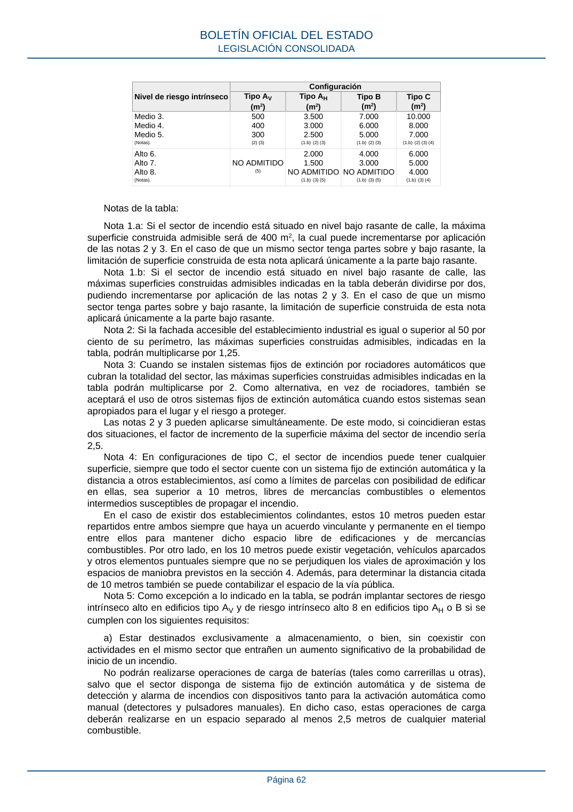

RSCIEI · Página 62 · versión 2025-04-10
SHA256: 85aa0af25d51e5b58d8975a4eefbf76d3f57a8933445cfe814ae9c4818a2e3e7 · página física 62 de 108 · métodos de encabezado
solo si están cotejados.
Formatos: Markdown · JSON de bloques · PDF p. 62 · imagen PNG
Nivel de riesgo intrínseco Configuración Tipo AV (m2) Tipo AH (m2) Tipo B (m2) Tipo C (m2) Medio 3. Medio 4. Medio 5. (Notas). 500 400 300 (2) (3) 3.500 3.000 2.500 (1.b) (2) (3) 7.000 6.000 5.000 (1.b) (2) (3) 10.000 8.000 7.000 (1.b) (2) (3) (4) Alto 6. Alto 7. Alto 8. (Notas). NO ADMITIDO (5) 2.000 1.500 NO ADMITIDO (1.b) (3) (5) 4.000 3.000 NO ADMITIDO (1.b) (3) (5) 6.000 5.000 4.000 (1.b) (3) (4) Notas de la tabla: Nota 1.a: Si el sector de incendio está situado en nivel bajo rasante de calle, la máxima superficie construida admisible será de 400 m2, la cual puede incrementarse por aplicación de las notas 2 y 3. En el caso de que un mismo sector tenga partes sobre y bajo rasante, la limitación de superficie construida de esta nota aplicará únicamente a la parte bajo rasante. Nota 1.b: Si el sector de incendio está situado en nivel bajo rasante de calle, las máximas superficies construidas admisibles indicadas en la tabla deberán dividirse por dos, pudiendo incrementarse por aplicación de las notas 2 y 3. En el caso de que un mismo sector tenga partes sobre y bajo rasante, la limitación de superficie construida de esta nota aplicará únicamente a la parte bajo rasante. Nota 2: Si la fachada accesible del establecimiento industrial es igual o superior al 50 por ciento de su perímetro, las máximas superficies construidas admisibles, indicadas en la tabla, podrán multiplicarse por 1,25. Nota 3: Cuando se instalen sistemas fijos de extinción por rociadores automáticos que cubran la totalidad del sector, las máximas superficies construidas admisibles indicadas en la tabla podrán multiplicarse por 2. Como alternativa, en vez de rociadores, también se aceptará el uso de otros sistemas fijos de extinción automática cuando estos sistemas sean apropiados para el lugar y el riesgo a proteger. Las notas 2 y 3 pueden aplicarse simultáneamente. De este modo, si coincidieran estas dos situaciones, el factor de incremento de la superficie máxima del sector de incendio sería 2,5. Nota 4: En configuraciones de tipo C, el sector de incendios puede tener cualquier superficie, siempre que todo el sector cuente con un sistema fijo de extinción automática y la distancia a otros establecimientos, así como a límites de parcelas con posibilidad de edificar en ellas, sea superior a 10 metros, libres de mercancías combustibles o elementos intermedios susceptibles de propagar el incendio. En el caso de existir dos establecimientos colindantes, estos 10 metros pueden estar repartidos entre ambos siempre que haya un acuerdo vinculante y permanente en el tiempo entre ellos para mantener dicho espacio libre de edificaciones y de mercancías combustibles. Por otro lado, en los 10 metros puede existir vegetación, vehículos aparcados y otros elementos puntuales siempre que no se perjudiquen los viales de aproximación y los espacios de maniobra previstos en la sección 4. Además, para determinar la distancia citada de 10 metros también se puede contabilizar el espacio de la vía pública. Nota 5: Como excepción a lo indicado en la tabla, se podrán implantar sectores de riesgo intrínseco alto en edificios tipo AV y de riesgo intrínseco alto 8 en edificios tipo AH o B si se cumplen con los siguientes requisitos: a) Estar destinados exclusivamente a almacenamiento, o bien, sin coexistir con actividades en el mismo sector que entrañen un aumento significativo de la probabilidad de inicio de un incendio. No podrán realizarse operaciones de carga de baterías (tales como carrerillas u otras), salvo que el sector disponga de sistema fijo de extinción automática y de sistema de detección y alarma de incendios con dispositivos tanto para la activación automática como manual (detectores y pulsadores manuales). En dicho caso, estas operaciones de carga deberán realizarse en un espacio separado al menos 2,5 metros de cualquier material combustible. BOLETÍN OFICIAL DEL ESTADO LEGISLACIÓN CONSOLIDADA Página 62
